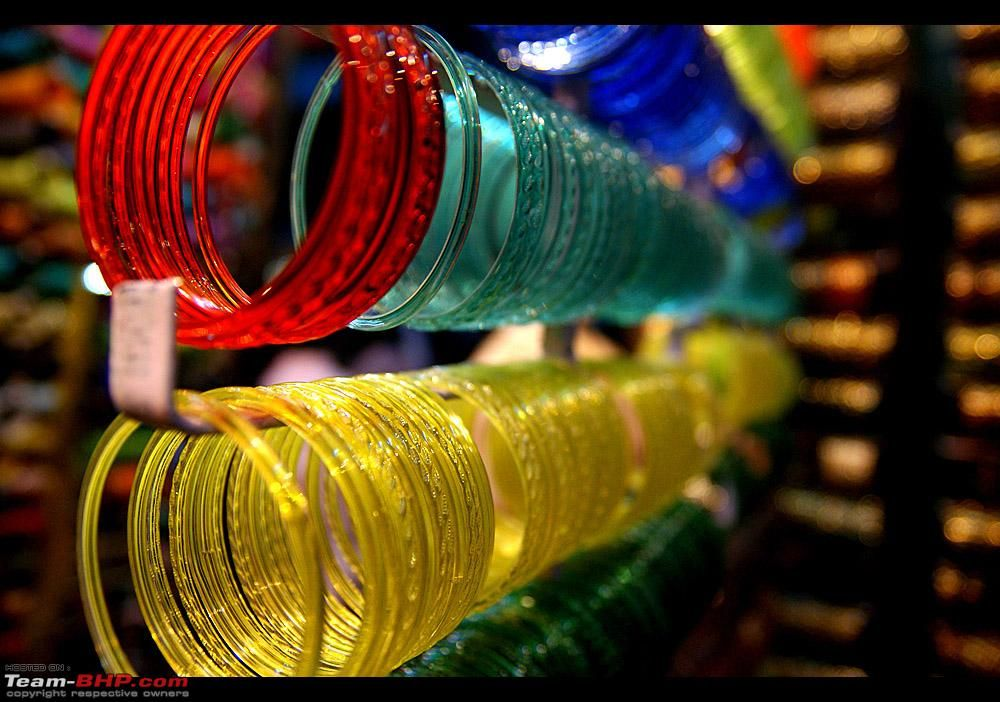

| MARBLE WORK | This are work done on Marble is mainly carried out in two places in India namely Rajasthan and Agra in Uttar Pradesh where the former is noted for its Inlay work on table tops, flooring, and all wall decorative and latter is known for its Parchin Kari work. The Parchin kari work is quite expensive and very graceful with intricate labor. | |
| FOLK ART | The tradition of paintings was present in ancient Uttar Pradesh. Prehistoric humans inscribed their artistic expressions on the walls of the caves and rock shelters where they lived. Evidence of prehistoric painting of Uttar palaeolithicand Mesolithic ages has been found from caves and rock Shelters. | |
|
CARPETS | Carpets of Uttar Pradesh are particularly known all across the globe for its unique colours and designs. Employment in Uttar Pradesh constitutes almost 90 % of the carpet weavers. Bhadohi, Mirzapur and Agra are the major carpet hubs in Uttar Pradesh. Among these places, Bhadohi enjoys worth special mention as the economy of this district and its 500 odd villages are completely dependent upon the carpet business. |
|  | GLASS WORK | Firozabad is a city near Agra in Firozabad district in the state of Uttar Pradesh in India. It is the centre of India's glassmaking industry and is known for the quality of the bangles and also glasswares produced there. |
|
BANARASI PRINT | A Banarasi sari is a sari made in Varanasi, an ancient city which is also called Benares (Banaras). The saris are among the finest saris in India and are known for their gold and silver brocade or zari, fine silk and opulent embroidery. The saris are made of finely woven silk and are decorated with intricate design, and, because of these engravings, are relatively heavy. |
| POTTERY | Khurja pottery is traditional Indian pottery work manufactured in Khurja of the Bulandshahr district in Uttar Pradesh state, India. Khurja pottery has been protected under the Geographical indication (GI) of the Agreement on Trade-Related Aspects of Intellectual Property Rights (TRIPS) agreement. It is listed at item 178 as "Khurja Pottery" of the GI Act 1999 of the Government of India with registration confirmed by the Controller General of Patents Designs and Trademarks. |
This is the art and craft that people use too love from all over world the work is full of enthusizam and with lots of different religions and faiths.